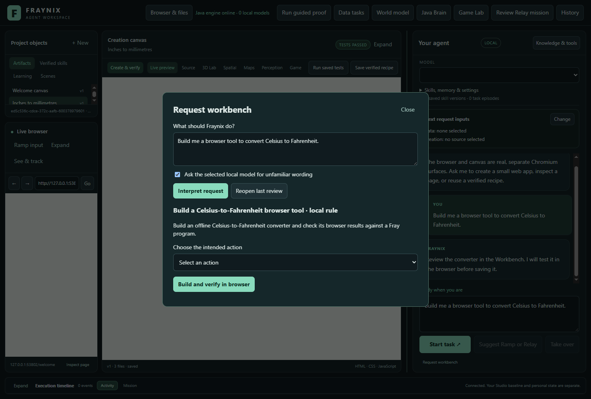
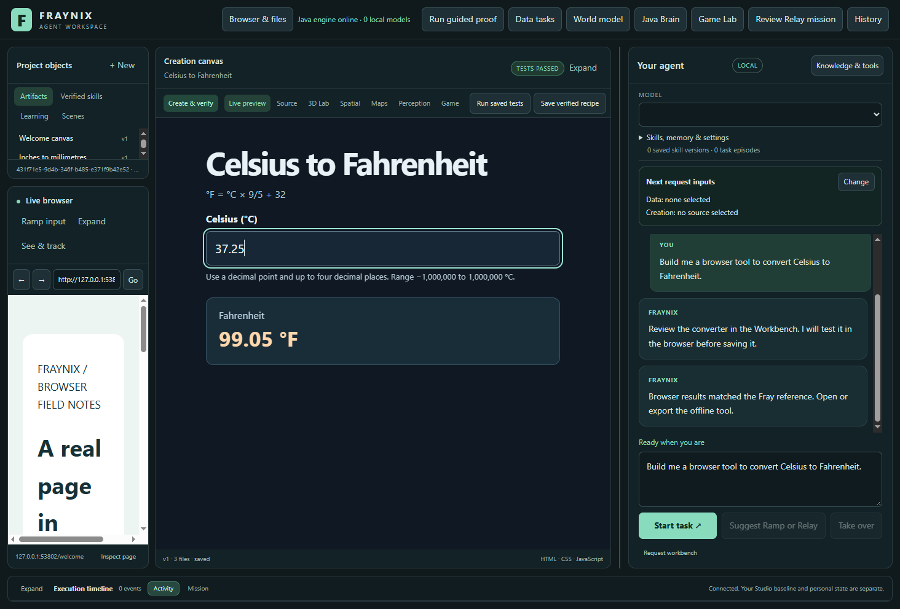

A verified Fray temperature converter
Ask for a Celsius-to-Fahrenheit browser tool in Chat. The Workbench checks the offline tool in Chromium against the original Fray program running in Java.

The Celsius-to-Fahrenheit Chat request awaiting approval

The verified converter displays 37.25 Celsius as 99.05 Fahrenheit
System files
Open source